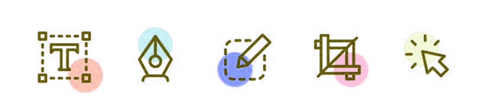

About
Welcome to my weekly Nerd Blog! Explore the latest in web development through the eyes of industry professionals. Join me weekly as they share their insights, technological discoveries, and passion for coding, keeping me up-to-date in this dynamic field. Let’s dive in!
My Skills
Since the start of CMD, I've been practicing a lot with HTML/CSS. I hope to improve my JavaScript(ing) as well, so I can build more techincal sites, and perhaps even create real-time dynamic websites. I happen to code in my free time a lot since I enjoy creating.
Before I started at CMD, I studied at Mediacollege, following the 'Mediavormger' coarse, which translates to "Graphic Designing". During it, I happened to use apps like Photoshop, Indesign and Illustrator. These are the same tools I use today so I can create content for my website, wether it be visuals or photoshopped images.
My learning goals
Critical Thinking and Systematic Approach
My first learning goal is to enhance my critical thinking abilities and approach tasks systematically. To achieve this, I will regularly reflect on my own thought processes and decision-making, challenging myself to delve deeper into the problems I encounter.

blank space
Strengthening Collaboration Skills
My second learning goal is to strengthen my collaboration skills. To accomplish this, I will actively engage within the team, being open to others’ ideas and providing constructive feedback.
I plan to hold regular check-ins with team members to discuss progress and identify any obstacles. Additionally, I will actively participate in team-building activities to strengthen relationships and promote effective collaboration.
blank space
Developing Skills with Tools and Technologies
My third learning goal is to develop proficiency with relevant tools and technologies essential for successfully completing the master’s project. I aim to achieve this through self-study and hands-on practice with project-specific tools.
I will also leverage the knowledge and expertise of more experienced team members in this area. Furthermore, I will participate in workshops and training sessions to refine my technical skills and stay updated with the latest developments in my field.
💡 Final Minor Reflection
I have reached the end of the minor, and I know I’ll miss it deeply. It wasn’t just the courses, but also the incredible people I was surrounded by. We all learned from each other and had a great time, even during the most stressful moments. The workshops were incredibly insightful, and the weekly talks from experts often provided enlightening perspectives.
I would highly recommend this minor to any second-year student who wants to enhance their coding skills and work on exciting projects. My teachers have certainly noticed my growth, even as I continue to progress. They consistently encouraged me to strive for excellence and to find best practices in everything I create.
Overall, I had an amazing experience. I’ve achieved many of my existing goals and set new ones, inspired by some of the speakers. I’m excited about my future as a professional front-end developer!